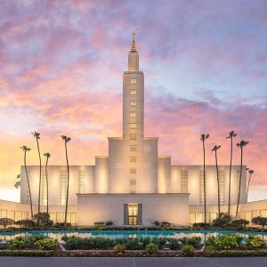

Los Angeles Temple
The Los Angeles California Temple was the first temple in California and on the west coast. Dedicated March 11, 1956 by Pres. David O. McKay. It is the church's 12th temple. I was sealed to my parents and my wife in this temple.
SQ FT: 190,000